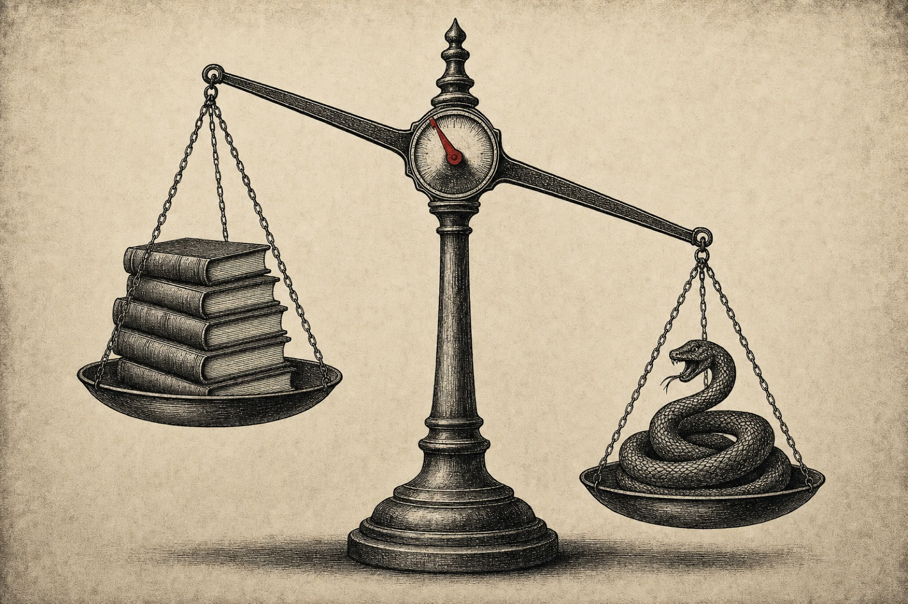
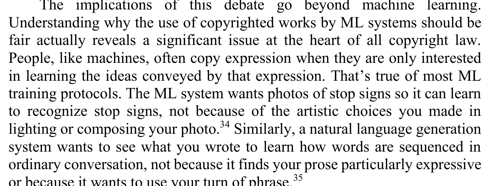
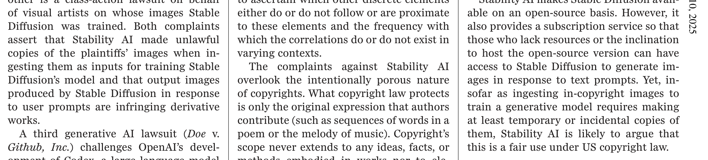
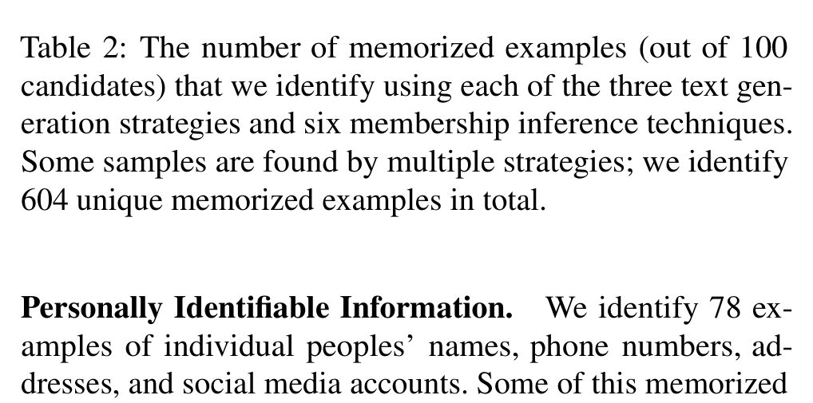

Page 09 of 11 — the rebuttal
The Best Case Against This Site
Their brief, first, and at full strength
The strongest case against this site doesn’t come from a lab’s press office. It comes from the scholarship the labs’ lawyers actually read. In “Fair Learning,” Mark Lemley and Bryan Casey argued, four years before this fight went public:

Steelman 09-A · Lemley & Casey, Texas Law Review, p. 748“ML systems should generally be able to use databases for training, whether or not the contents of that database are copyrighted.”
Their reason comes down to what copyright is even for. The system eats facts and patterns, and copyright was never meant to fence those off:
Steelman 09-B · Lemley & Casey, p. 749“The ML system wants photos of stop signs so it can learn to recognize stop signs, not because of the artistic choices you made in lighting or composing your photo.”

And to be fair, the stakes are real. With millions of works and thousands of owners, “allowing a copyright claim is tantamount to saying, not that copyright owners will get paid, but that the use won’t be permitted at all” (748). Pamela Samuelson, writing in Science, adds the legal floor:
Steelman 09-C · Samuelson, Science, p. 159“The complaints against Stability AI overlook the intentionally porous nature of copyrights. What copyright law protects is only the original expression that authors contribute (such as sequences of words in a poem or the melody of music).”

By July 2026 this position had state power behind it. Here’s Treasury Secretary Scott Bessent: “This administration supports open source models, but what we do not support is IP theft. If we see, especially, that overseas models are stealing from our great companies, we have the ability to sanction them” (qtd. in Yildirim). The president’s science adviser claimed “Moonshot AI distilled Anthropic’s Fable for the development of its K3 model” through “a sophisticated internal platform . . . allowing them to quickly switch between multiple methods of access to avoid detection” (qtd. in Sharwood). It’s important to note these are allegations, and I use them the same way I used Anthropic’s post: as evidence of a position. But look at which extraction the state condemns. It’s only the one aimed at “our great companies.” Nobody is proposing sanctions for the scraping that built those companies. That asymmetry is Argument I with subpoena power.
What survives, what doesn’t
Give the steelman its ground. A lot of training really is nonexpressive, and licensing billions of works might genuinely be impossible. But the brief still has three cracks, and its own authors point at two of them.
First, Lemley and Casey themselves admit the fair-use question “can—and should—become much tougher” when the training aims at expression. Their example is “a song in the style of Ariana Grande” (750). Distillation is exactly that tougher case, at industrial scale. Second, the stop-sign story is missing data now. Carlini and his team pulled 604 verbatim training sequences out of GPT-2 and found that “larger language models consistently memorized more training data than smaller LMs” (Carlini et al. 2645). Sometimes the system keeps your photo.

Third, there’s a middle position the brief never priced: a compulsory license. Training stays legal, and a set rate pays the people in the corpus, the same way mechanical licenses pay songwriters. The $1.5 billion Bartz settlement, at about $3,000 a work, might be exactly that regime arriving by lawsuit. I still prefer the conduct rule for one reason: a license prices the extraction without slowing the extraction that the collapse research says will drain the supply. But I’ll admit I hold this preference more loosely than the rest of the site.
Trail note · the ford, mapped
Learning is nonexpressive: the system “wants photos of stop signs so it can learn to recognize stop signs,” not your artistry (Lemley and Casey 749).
Their own carve-out: when training aims at expression, the question “can—and should—become much tougher” (750). Distillation is that tougher case at industrial scale — 16 million structured exchanges aimed at the expressive capability itself.
ConcededCopyright is porous by design: what it protects “is only the original expression that authors contribute” (Samuelson 159) — and the machine does not want your expression.
Carlini and colleagues extracted 604 verbatim training sequences from GPT-2, and “larger language models consistently memorized more training data than smaller LMs” (Carlini et al. 2645). Sometimes it keeps your photo.
MemorizedA license for millions of works with thousands of owners cannot clear; allowing a claim means “the use won’t be permitted at all” (748).
The middle they never priced: a compulsory license — training stays legal, a statutory rate pays the corpus — the way mechanical licenses work for cover songs. The Bartz settlement, at roughly $3,000 a work, may be that regime arriving by lawsuit.
UnpricedThe biases, named on both sides
Naming the biases now, mine included. The reflexive take, that this is thieves complaining about thievery, is confirmation bias wearing a halo. The industry’s mirror image is motivated reasoning about the word “learning,” which launders acquisition, retention, and reproduction into one innocent verb. And mine: I work in this industry. So weigh me the way I weighed Anthropic’s post: evidence of a position, and that’s all. The audit is the point.